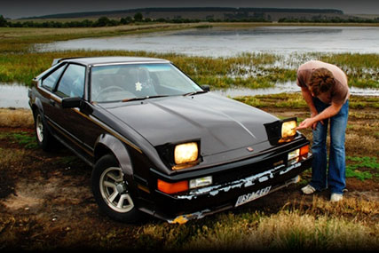

Usability
Current Situation
'One of the great things about Bitcoin is its lack of democracy'
The growth of bitcoin usage in the last 5 years has been exponential and there have been numerous theories and beliefs regarding this crypto-currency's future. Bitcoins have proved to be a suitable alternative to existing financial systems where people from all across the world have adopted this new currency and have already made millions out of it.
The supply Growth of Bitcoins has been set to be 25 bitcoins per block until mid 2016 and is believed to half down to 12.5 for the next 4 years before it halves again. This process is believed to continue until 2110 to 2140 by when all the 21million bitcoins available would have been used.
To Start With..
The first Bitcoin Transaction was made on the 12th Jan 2009 from Satoshi to Hal Finney.
To get a glimpse of the growth of Bitcoins we might start with the fact that it started as:
$1 = 1,309.03 BTC
And now it is:
$416 = 1 BTC

As the stats portray, the growth of Bitcoins has been massive and it has made a huge impact on various financial systems all across the globe.
The usability of Bitcoins increased gradually with the passing years and by the end of 2011, people had started buying things as expensive as a vehicle using this innovative pseudo-currency.
By 2016, Bitcoin has passed numerous milestones which clearly highlight how widely the concept has been accepted and where its heading towards.
The Evolution of Bitcoin, from Behind a Berlin Bar

These days you won't have any problems spending your bitcoins. You can book flights, buy apartments and eat and drink your way through most of the world's major cities. But three years ago things were different. Then you had to fly to Berlin and make your way to a small bar in the city’s Kreuzberg district if you wanted to spend bitcoins. Room 77 in the German capital is celebrating five years of accepting the crypto-currency. The exact date is not really clear but the owner of the bar, Joerg Platzer, approximated that it was around May 2011 that he accepted the first bitcoin transaction for a beer.
Unless challenged, he will continue to claim that it was the world's first purchase with the digital currency in a shop, restaurant or bar.
|
Things have changed dramatically since then. Bitcoin has seen highs and lows, it has beenembraced by many and discredited by others but it has continued its march towards global recognition. Back then, Platzer explained, he was happy if he had one or two bitcoin purchases per month; now he has up to 10 purchases per evening. |
|

Back then people would turn up with their laptops and manually type in the address codes to make transactions; now young hipsters show up with their smartphones and make transactions like it’s the easiest thing in the world.
Back then Platzer would be ecstatic if four people showed up to a bitcoin meetup; now his bar fills up on the first Thursday of every month when the local enthusiasts meet.
Platzer described himself as an old-school 'hacker, lock picker and phreak'. In his circles there was talk of a decentralized digital currency for years, and when he heard about bitcoin for the first time he knew he was on to something big.
'Everyone was laughing about it and people were asking "what is this funny bitcoin stuff [that] was on the wall". The staff just shook their heads and said it was some strange thing the boss liked.'

Milestones
August 18 2008
Domain name "bitcoin.org" registered.
|
February 14 2011 |
 |

The advert for the first car sold via a Bitcoin transaction
November 22 2013
194,993 BTC transaction worth $147 Million sparks mystery and speculation
The transaction, tagged "Shit Load of Money!" by its mystery originator, appeared on Blockchain.info early in the evening of 22nd November. It is one of the largest transactions in bitcoin's history, by far the largest under bitcoin's recent high prices, and represented 1.6% of all bitcoins in circulation at that time.
March 2012
Linode hacked, 46,000 BTC stolen
A security breach at Linode, a website hosting company, results in the largest theft of Bitcoins recorded to date. More than 46,000 BTC are stolen, valued at over US$228,000.
March 28 2013
Market cap reaches $1 billion
The total Bitcoin market cap passes US$1 billion.
May 2 2013
First Bitcoin ATM unveiled
The first Bitcoin ATM in the world is debuted in San Diego, California.

November 6 2013
Bitcoin sets new all-time high value
The price of the Bitcoin breaks record set in April 2013, despite the Silk Road bust and fears over security, reaching US$269 per bitcoin.